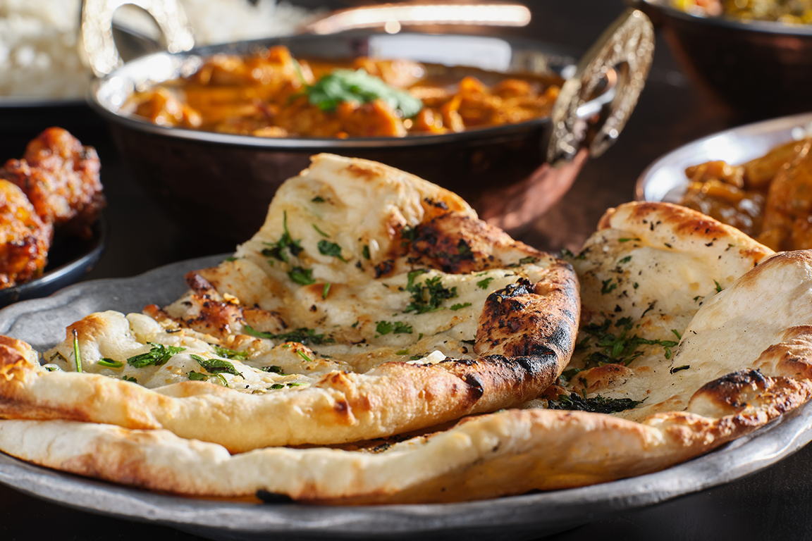

Naan Bread Recipe

Naan bread is a popular Indian flatbread that is soft, lightly leavened, and slightly tangy. It's perfect for scooping up curries and sauces.Want to see the recipe in action? Check out the video below!
Watch the Recipe Video!Ingredients:
- 2 cups all-purpose flour
- 1 teaspoon salt
- 1 teaspoon sugar
- 1 packet active dry yeast
- 1 cup lukewarm water
- 2 tablespoons vegetable oil
Instructions:
- In a large mixing bowl, combine flour, salt, sugar, and yeast.
- Gradually add lukewarm water and mix until a smooth dough forms.
- Knead the dough for 5-7 minutes until it becomes soft and elastic.
- Place the dough in a greased bowl, cover, and let it rise in a warm place for 1-2 hours.
- Preheat a non-stick skillet or tava over medium heat.
- Divide the dough into 6-8 equal portions and shape each portion into a ball.
- Roll out each ball into a thin circle and cook for 1-2 minutes on each side.
- Brush with melted butter and serve hot.